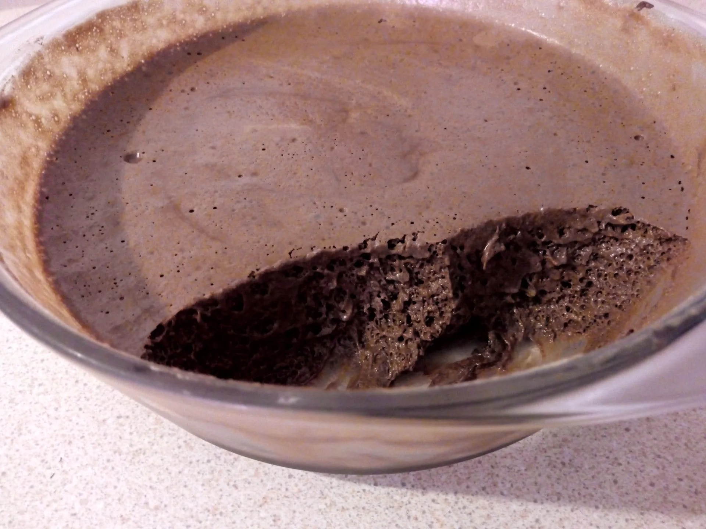

Mousse au chocolat à l'aquafaba
J'ai testé pour vous, le jus de pois chiche - aquafaba- remplace les oeufs, c'est bluffant! - Sans gluten -

Préparation : 15 minutes Cuisson : pas de cuisson
Ingrédients : pour 6 personnes
200g de jus de cuisson des pois chiches, « l'aquafaba » (du latin aqua : eau, et faba : fève)
200g de chocolat noir dessert
1 cuil à soupe de sucre complet bio – facultatif - et complètement inutile si vous utilisez du chocolat dessert au lait
1/2 cuil à café de vanille en poudre
Mode opératoire
Mettre le chocolat à fondre au bain – marie
Pendant ce temps-là, battre le jus de pois chiches au batteur électrique comme des blancs en neige. Ajouter le sucre et la vanille en continuant de battre pour homogénéiser.
Lorsque le chocolat est fondu et légèrement refroidi, incorporer la mousse de pois chiches.
Placer au frais au moins 2 heures
Dégustez bien frais.
Intérêt de la recette : plus léger que la mousse au chocolat réalisée avec des œufs. Permet d'utiliser le jus de cuisson des pois chiches, lorsque vous préparez de l'hoummous par exemple (voir plus haut la recette de l'hoummous). Rien ne se perd. Et l'expérience est amusante.
Astuce : pour avoir toujours de la poudre de vanille maison, gardez les gousses de vanille déjà utilisées, rincées et séchées. Passez-les au moulin à café.